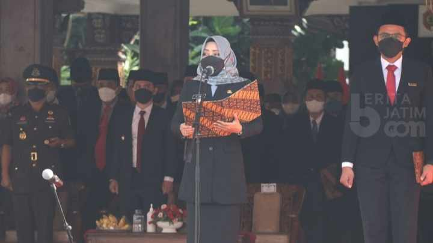
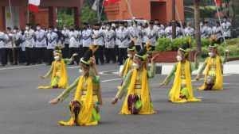
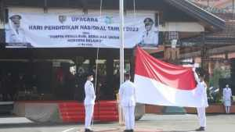

Bupati Mojokerto: Kurikulum Merdeka Terbukti Kurangi Dampak Hilangnya Pembelajaran
(beritajatim.com) - Kurikulum Merdeka yang kini sudah dijalankan ratusan ribu sekolah di seluruh Indonesia terbukti mampu mengurangi dampak hilangnya pembelajaran. Hal tersebut disampaikan Bupati Mojokerto saat upacara bendera dalam rangka memperingati Hari Pendidikan Nasional (Hardiknas). Peringatan Hardiknas kali ini, berbeda dengan tanggal sebagaimana semestinya, yakni 2 Mei kemarin, sebab bertepatan dengan Hari Raya Idul Fitri 1443 H dan cuti bersama. Pemerintah Kabupaten (Pemkab) Mojokerto menggelar upacara bendera di halaman Pemkab Mojokerto, Jum’at, (13/5/2022).Upacara dipimpin langsung oleh Bupati Mojokerto, Ikfina Fahmawati dan diikuti oleh seluruh kepala sekolah, guru dan siswa mulai jenjang Sekolah Dasar (SD) hingga Sekolah Menengah Pertama (SMP) secara tatap muka dan mematuhi protokol kesehatan. Bupati Mojokerto, Ikfina Fahmawati menyampaikan, sejumlah perkembangan Merdeka Belajar yang kini tengah menginjak tahun ketiga. Kurikulum Merdeka yang kini sudah dijalankan ratusan ribu sekolah di seluruh Indonesia, pergantian ujian nasional menjadi Asesmen Nasional, serta terciptanya dana abadi kebudayaan untuk para pelaku budaya dan seniman.
“Terbukti, Kurikulum Merdeka mampu mengurangi dampak hilangnya pembelajaran. Kini Kurikulum Merdeka sudah diterapkan di lebih dari 140.000 satuan pendidikan di seluruh Indonesia. Itu berarti bahwa ratusan ribu anak Indonesia sudah belajar dengan cara yang jauh lebih menyenangkan dan memerdekakan,” ungkapnya membacakan pidato Mendikbud Ristek RI, Nadiem Anwar Makarim.
Bupati perempuan pertama di Kabupaten Mojokerto ini menegaskan, para guru dan murid tidak perlu lagi khawatir dengan tes kelulusan karena Asesmen Nasional yang sekarang digunakan tidak bertujuan untuk menghukum. Tetapi sebagai bahan refleksi agar guru sampai kepala sekolah terdorong untuk belajar.
“Sehingga nanti termotivasi untuk meningkatkan kualitas sekolahnya menjadi lebih inklusif dan bebas dari ancaman tiga dosa besar pendidikan. Semangat yang sama juga sudah kita dengar dari para seniman dan pelaku budaya, sekarang mulai bangkit lagi, mulai berkarya lagi dengan lebih merdeka,” katanya.
Menurutnya, hal tersebut karena kegigihan semua elemen untuk melahirkan terobosan ana abadi kebudayaan dan kanal budaya pertama di Indonesia. Dampaknya, tegas Bupati, sekarang tidak ada lagi batasan ruang dan dukungan untuk berekspresi, untuk terus menggerakkan pemajuan kebudayaan.
“Semua perubahan positif yang kita usung bersama ini tidak hanya dirasakan oleh para orang tua, guru, dan murid di Indonesia. Tetapi sudah digaungkan sampai ke negara-negara lain melalui presidensi Indonesia di konferensi tingkat tinggi G20. Tahun ini kita membuktikan diri bahwa kita tidak lagi hanya menjadi pengikut, tetapi pemimpin dari gerakan pemulihan dunia,” tukasnya.
Dalam rangkaian Upacara Peringatan Hardiknas 2022 ini, Bupati Mojokerto juga menyerahkan piala kepada para juara Festival dan Lomba Seni Siswa Nasional (FLS2N) dan Olimpiade Sains Nasional (OSN) jenjang Sekolah Dasar dan Sekolah Menengah Pertama. Adapun rincian juara FLS2N dan OSN 2022 sebagai berikut. Daftar juara FLS2N Jenjang SMP, kategori lomba Vocal Solo juara 1 diraih SMPN 1 Ngoro, juara 2 SMPN 1 Dlanggu, juara 3 SMP Santo Yusuf. Kategori Desain Poster, juara 1 diraih SMPN 1 Dawarblandong, juara 2 SMPN 2 Dawarblandong dan juara 3 SMPI Al-Akbar. Kategori Festival Musik Tradisional, juara 1 diraih SMPN 1 Dawarblandong, juara 2 SMPN 2 Dawarblandong dan juara 3 SMPN 1 Gondang. Kategori Fetival Kreativitas Tari, juara 1 diraih oleh SMPN 1 Dawarblandong, juara 2 SMPN 1 Mojosari dan juara 3 SMPN 1 Puri. Kategori Gitar Duet, SMPN 2 Dawarblandong berhasil meraih juara 1, juara 2 diraih SMPN 3 Kutorejo sementara juara 3 SMPN 2 Gedeg. Juara OSN jenjang SMP mata pelajaran Matematika berhasil dimenangkan siswa dari SMPN 1 Ngoro, juara 2 siswa SMPN 2 Bangsal dan juara 3 siswa asal SMPN 1 Puri. OSN mata pelajaran IPA dimenangkan pelajar asal SMPN 1 Ngoro, disusul juara kedua oleh siswa asal SMPN 1 Mojosari, sementara juara ketiga diraih siswa asal SMP Al Qur’an An Nawawy. OSN mata pelajaran IPS dimenangkan oleh siswa asal SMPN 1 Bangsal, juara 2 siswa asal SMPN 1 Trowulan dan juara 3 diraih siswa asal SMPN 1 Sooko. Daftar juara FLS2N jenjang SD, Kategori Menyanyi Tunggal juara 1 asal SDN Trawas 1, juara 2 pelajar asal SDN Pohkecik dan juara 3 diraih siswa asal SDN Kebonagung. Lomba bidang Gambar Bercerita juara 1 berhasil disabet siswa asal SDN Kebonagung, juara 2 siswa asal SDN Mojosari sementara juara 3 diraih siswa asal SDN Sekargadung. Lomba bidang Pantomim, juara 1 diraih SDN Banjaragung, juara 2 diraih SDN Bangsal dan juara 3 berhasil diraih SDN Bandarasri 2. Lomba di bidang Seni Tari dimenangkan SDN Banyulegi. Disusul juara 2 diraih SDN Purwojati dan juara 3 diraih SDN Kedunglengkong. Lomba kategori Kriya Anyam, juara 1 berhasil diraih siswa asal SDN Gempolkerep, juara 2 siswa asal SDN Sooko 1 dan juara 3 diraih siswa asal SDN Gunungan. Juara OSN SD mata pelajaran IPA juara 1 berhasil diraih siswa asal SDN Mojosari, juara 2 diraih siswa asal SDN Pulorejo 2 dan juara 3 diraih siswa asal SDN Kepuhanyar. [tin/kun]